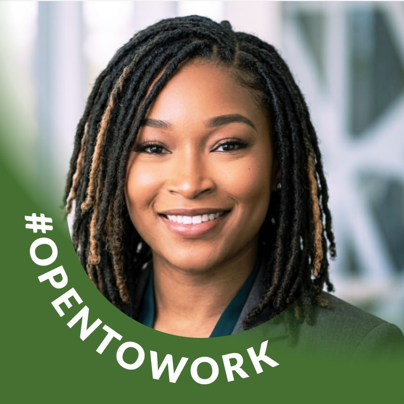

More About Me

I thrive on problem-solving, active listening, and working directly with technology to create functional, practical solutions that help others.
My Hobbies
- Exploring new technologies and practicing coding in VS Code
- Organizing community celebrations and decorating themed events
- Spending time outdoors and visiting family-oriented parks
Professional Background
With an extensive background centered on caregiving, customer service, and environmental service management, I excel at keeping complex workspaces highly organized, clean, and operating smoothly under pressure.
What I Bring to Tech
Patience, clear communication, and a habit of staying calm while solving problems for other people.
Future Tech Career Goals
I am transitioning full-time into the IT field, aiming to establish an impactful, unique business footprint that combines clear communication with robust tech support infrastructure.